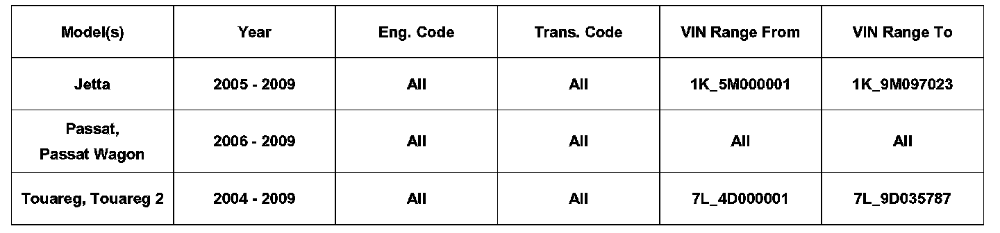
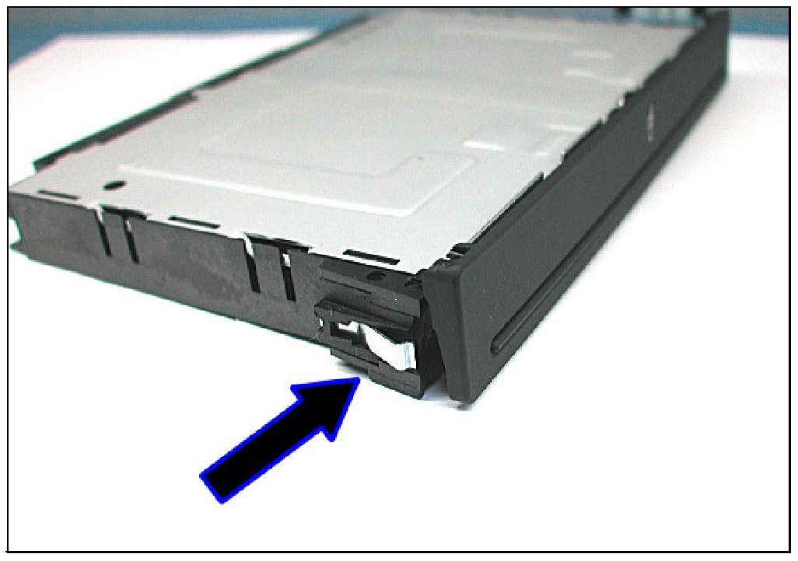
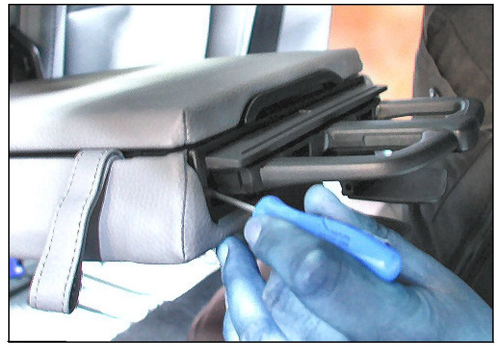
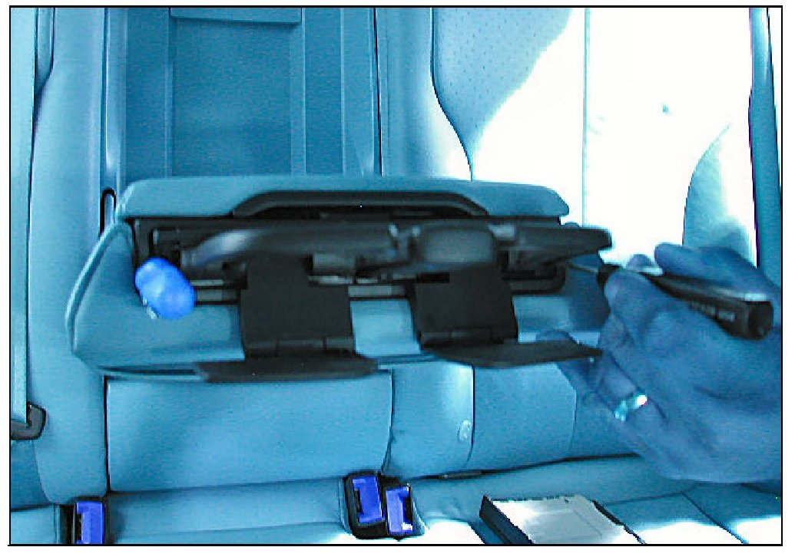
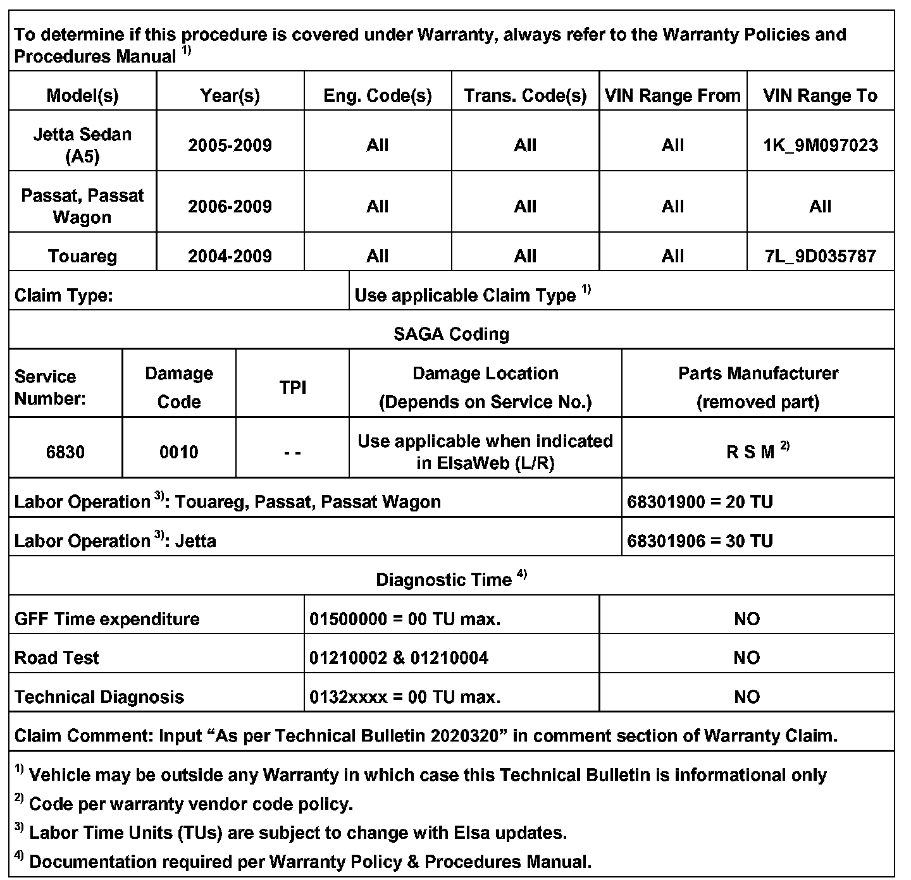
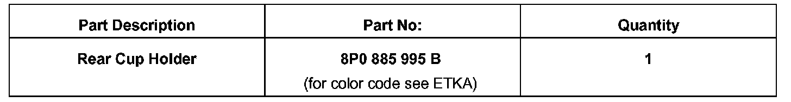

Interior - Rear Cup Holder Sticks/Hard To Remove
6809-01
Affected Vehicles
Condition
68 09 01 Mar. 26, 2009 2020320
Rear Cup Holder Replacement
Rear cup holder tray release mechanism is binding/ difficult to eject.
Technical Background
New plastic material is being used for inner plastic sleeve.
Production Solution
- Improved cup holder part number 8P0 885 995 B for Touareg starting with VIN 7L_9D035788
- For Jetta Sedan (A5) only used 8P0 885 995 B up to VIN 1K_9M097023.
Service

- Remove rear cup holder by releasing retainer -arrow- (opposite side similar).
Tip: Removal will require the use of (2) small, standard blade screwdrivers.

- Eject cup holder tray.
- Insert a screwdriver to release the retainer.

- Insert second screwdriver to release opposite side.
- Pull cup holder tray out of console.
- Install rear cup holder Part No: 8P0 885 995 B
Warranty

Required Parts and Tools

No Special Tools required.
Additional Information
All part and service references provided in this Technical Bulletin are subject to change and/or removal. Always check with your Parts Dept. and Repair Manuals for the latest information.